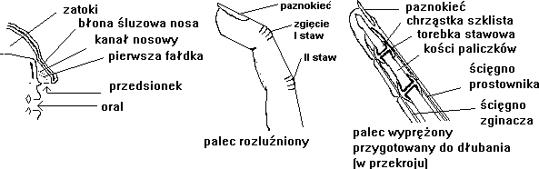

|
|
||
| Czy d³ubanie jest niezbêdne w pe³nym ¿yciu cz³owieka?
D³ubanie jest czynno¶ci± naturaln±, dan± nam przez naturê, aby przysporzyæ nam rado¶ci w ¿yciu. Jest tak¿e zarazem spraw± w pe³ni ludzk±, gdy¿ ¿adne zwierzê nie d³ubie tak jak my. Spójrz, jaki dyskomfort powstaje, gdy odczuwasz potrzebê d³ubania i nie mo¿esz tego uczyniæ? Powoduje to ci±g³y stres, wzrastanie napiêcia i w koñcu uniemo¿liwia prawid³owe funkcjonowanie. |
||
| Czy d³ubanie jest niezbêdne w pe³nym ¿yciu cz³owieka?
D³ubanie jest czynno¶ci± naturaln±, dan± nam przez naturê, aby przysporzyæ nam rado¶ci w ¿yciu. Jest tak¿e zarazem spraw± w pe³ni ludzk±, gdy¿ ¿adne zwierzê nie d³ubie tak jak my. Spójrz, jaki dyskomfort powstaje, gdy odczuwasz potrzebê d³ubania i nie mo¿esz tego uczyniæ? Powoduje to ci±g³y stres, wzrastanie napiêcia i w koñcu uniemo¿liwia prawid³owe funkcjonowanie. |
||
| Historia stosunku do d³ubania.
Mentalno¶æ antyczna ujmowa³a cz³owieka w pe³ni jego cz³owieczeñstwa,
jako harmoniê duszy i cia³a. Dopiero ciemnota wieków ¶rednich, w³adza kleru
wprowadzi³y do kultury lêk przed cielesno¶ci±. To co wi±za³o siê z cia³em
by³o z³e i grzeszne.
|
||
| Budowa narz±dów
 |
||
| Przegl±d pozycji
Mo¿na, oczywi¶cie, d³ubanie praktykowaæ w samotno¶ci. Jest to wrêcz
niezbêdne w sytuacjach, gdy w danym momencie nie mamy do dyspozycji partnera,
a odczuwamy tak± potrzebê. Jednak d³ubanie przy pomocy w³asnej rêki, lub
dostêpnych w sklepie d³ubatorów (patrz rys.)
znacznie zawê¿a mo¿liwo¶ci i nie daje pe³nej satysfakcji. Zró¿nicowanie pozycji umo¿liwia dok³adniejsze wyd³ubanie, g³êbsz± penetracjê wszystkich zakamarków. |
||
| Pozycja klasyczna - twarz± w twarz, na stoj±co,
siedz±co lub le¿±co. Ta niezbyt wyrafinowana pozycja ma tê zaletê, ¿e mo¿na
obejmowaæ rêkami partnera.
|
||
| Pozycja od ty³u - twarz± w dó³ lub w górê.
Penetracja jest niezbyt g³êboka, ale partnerzy stykaj± siê niemal ca³ym
cia³em. Obie opcje mo¿liwe s± do wykonania te¿ w wariancie na boku.
|
||
Pozycja 69 - z zagiêtym palcem. Umo¿liwia
stymulacjê przedniej ¶cianki kana³u.
 |
||
| Stymulacja na dwie dziurki.
Mo¿na wykorzystaæ jednocze¶nie dwa s±siaduj±ce otwory - na dwa sposoby:
|
||
| Utylizacja wyd³ubin
Najpiêkniesze i najbardziej wzmagaj±ce harmoniê zwi±zku jest umieszczanie wyd³ubin z powrotem w ciele w³asnym i partnera - poprzez oral. Je¶li jednak kto¶ nie chce mieæ bezpo¶rednio kontaktu z wyd³ubinami, mo¿e stosowaæ gumow± rêkawiczkê. Chroni ona te¿ przed chorobami przenoszonymi t± drog±. |
||
| Psychologia d³ubania.
Pamiêtajmy, ¿e bardzo wa¿ne jest zgranie kontaktu fizycznego z duchowym. D³ubanie jest najpiêkniejsze w zwi±zku dwojga kochaj±cych siê ludzi. |
||


|
|
||